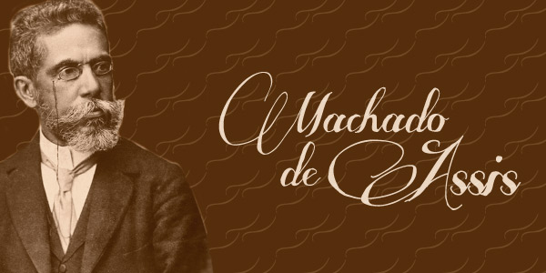

QUIZZ GAME

Venha descobrir o quanto você sabe sobre Machado de Assis!
A cada resposta certa, você ganha 10 pontos. O quizz é composto de 10 perguntas.
Boa sorte!
1. Qual o seu nome completo?
Res:
João Maria Machado de Assis
Joaquim Mario Machado de Assis
José Maria Machado de Assis
Joaquim Maria Machado de Assis
2. Qual a sua ocupação principal?
Res:
Jornalista
Escritor
Comerciante
Artista
3. Em qual estado nasceu?
Res:
Rio de Janeiro
Santa Catarina
Rio Grande do Sul
São Paulo
4. Já assumiu um cargo no ministério da agricultura?
Res:
Sim
Não
5. É o fundador de qual das cadeiras da Academia Brasileira de Letras?
Res:
1
40
23
17
6. Foi o introdutor do Realismo no Brasil?
Res:
Sim
Não
7. Foi homenageado com o
Res:
Prêmio Jabuti
Prêmio Machado de Assis
Prêmio Camões
Prêmio Franz Kafka
8. Foi incluído na lista de Heróis Mundiais?
Res:
Sim
Não
9. Produziu mais de
Res:
830 obras
529 obras
1012 obras
230 obras
10. Participou do Romantismo?
Res:
Sim
Não
Verificar Resultado